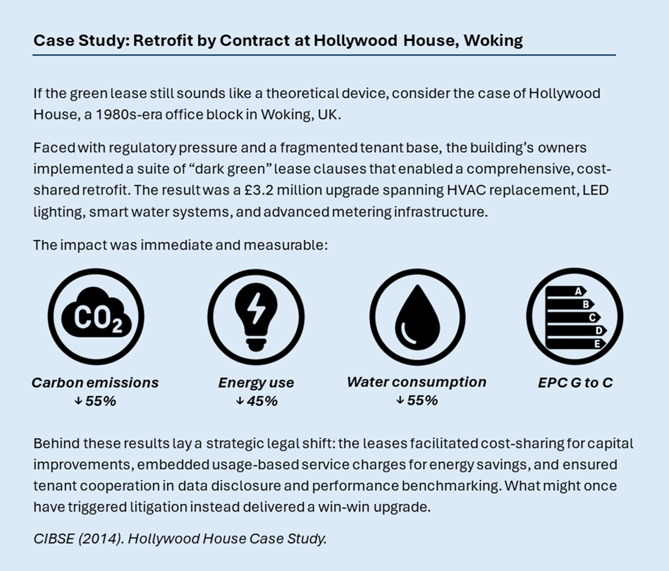

Operational Strategy: The Quiet Legal Innovation Powering Europe’s Green Office Revolution
How evolving green lease provisions are turning regulatory risk into retrofit-readiness
Europe’s commercial buildings account for nearly 40% of total energy use and over a third of the continent’s carbon emissions. With most of these structures expected to remain standing well beyond 2050, the challenge is clear: how to decarbonize a vast, ageing built environment in time to meet net-zero targets.
As landlords, occupiers, and investors grapple with tightening regulatory thresholds, from the EU’s Energy Performance of Buildings Directive (EPBD) to the UK’s EPC B mandate by 2030, a quiet revolution is underway. It isn’t being led by carbon markets or megaprojects, but by something altogether more granular: the commercial lease.
Long the domain of boilerplate rent reviews and service charge schedules, the lease is being rewritten as a sustainability instrument. These new “green leases” are contracts embedding environmental and social obligations into legal agreements between landlords and tenants, which are emerging as critical frameworks to distribute retrofit costs, align incentives, and embed ESG compliance into the operational heart of real estate.
Clause by Clause, a Market Transforms
In its early iterations, the green lease was little more than a memorandum of understanding. It encouraged best efforts around data sharing and energy efficiency but lacked enforceability. That has changed decisively.
In January 2024, the UK’s Better Buildings Partnership (BBP) released a major update to its Green Lease Toolkit [1]. The revised guidance introduces a tiered framework of “light,” “medium,” and “dark green” clauses, allowing legal teams to tailor sustainability provisions by ambition and enforceability. This modularity is crucial for multi-tenant buildings and for landlords managing portfolios across jurisdictions.
Elsewhere in Europe, national legal cultures are shaping distinctive approaches. In Germany, the ZIA Green Lease 2.0 recast launched earlier this year offers clause-by-clause flexibility, with extended modules incorporating social (S) and governance (G) provisions alongside traditional environmental targets [2][3]. In the Netherlands, the widely-used ROZ lease templates now integrate a “sustainability matrix,” aligning obligations with actionable technical measures [4]. Ireland is going a step further by linking green lease adoption to national climate legislation under its 2021 Climate Action and Low Carbon Development (Amendment) Act [5].
Together, these frameworks reflect a deepening convergence between sustainability intent and legal enforceability - a convergence that may prove pivotal in mobilizing the capital and coordination required for deep retrofits.
The practical impact of green leases is well illustrated by the case of Hollywood House in Woking, UK, where a dark green lease enabled a comprehensive retrofit across a fragmented tenant base.

Market Impact: From ESG Signal to Asset Value Driver
This is more than anecdotal progress. A 2023 academic study analyzing 7,246 leases across 376 commercial assets found that for every 1% increase in green lease adoption, landlords saw:
- A 0.29% uplift in rental income
- A 0.38% rise in net asset value [6]
These are not trivial figures, particularly in an environment where performance differentials are widening between ESG-aligned and stranded assets. Green lease clauses are increasingly viewed by institutional investors as a proxy for retrofit-readiness. In effect, the legal framework has become a forward-looking indicator of value preservation.
Investor Takeaway: Green leases are transitioning from a soft ESG signal to a hard metric of investability. In regulated markets, they may become the new baseline for core assets. In less regulated jurisdictions, they provide an anticipatory hedge against future legal exposure.
This trend is supported by the mainstreaming of lease-embedded tools such as:
- Sustainability-linked service charges
- Carbon budgeting provisions
- Retrofit cost-sharing mechanisms
- Performance-linked rent incentives
- Social and governance metrics integrated via modular clauses
Moreover, advances in smart metering, IoT sensors, and real-time analytics are enabling more robust tracking, verification, and enforcement of lease obligations - all features that would have been infeasible even a decade ago.
From Legal Footnote to Strategic Instrument
As the industry edges toward a regulatory cliff edge (e.g. 2027 in the EU, 2030 in the UK) the green lease is no longer a niche innovation. It is rapidly becoming a foundation of future-fit real estate portfolios.
And while capital will always be essential, legal architecture may prove just as crucial. After all, the success of any retrofit depends not only on funding and engineering, but on alignment across owners, occupiers, lenders, and regulators. The green lease offers a rare, scalable mechanism for such alignment.
In a sector where obsolescence increasingly hinges on sustainability, this may be the most powerful clause you've never heard of.
- Better Buildings Partnership. Green Lease Toolkit. 2024 ↩
- ZIA Germany. "Green Lease 2.0 – Vom Grünen Mietvertrag zum ESG-Lease". 2024 ↩
- Dentons. "ZIA Green Lease 2.0 Recast". 2024 ↩
- GT Amsterdam Law Blog. "New and Greener ROZ Template". 2023 ↩
- A&L Goodbody. "Green leases: where are we now?".2024 ↩
- SSRN. "Green Leases and Investment Performance". 2023 ↩